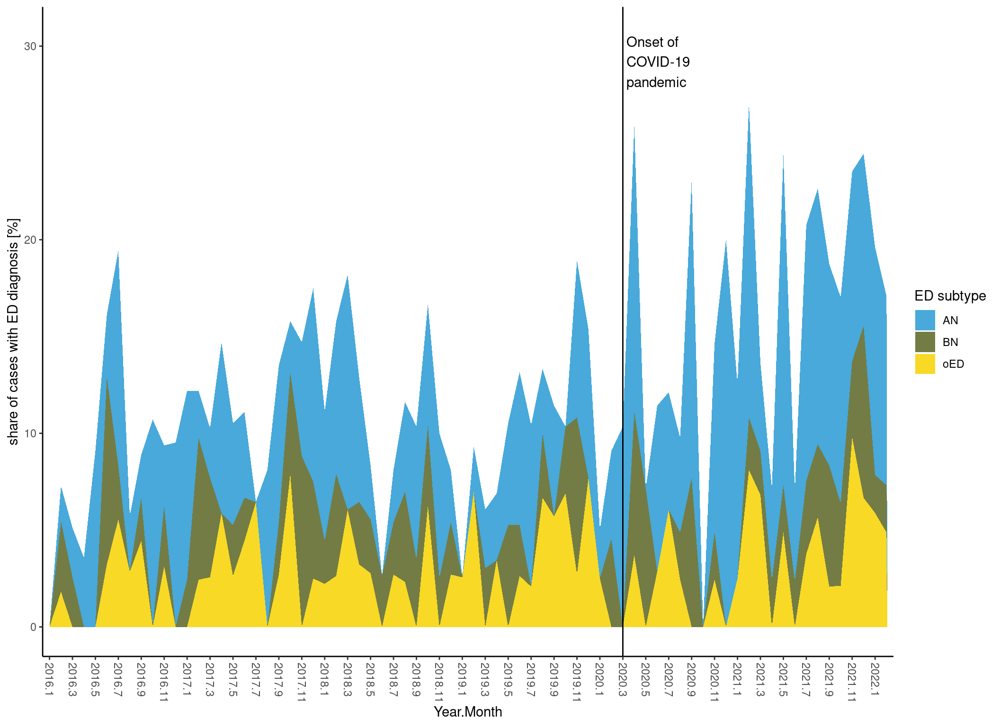
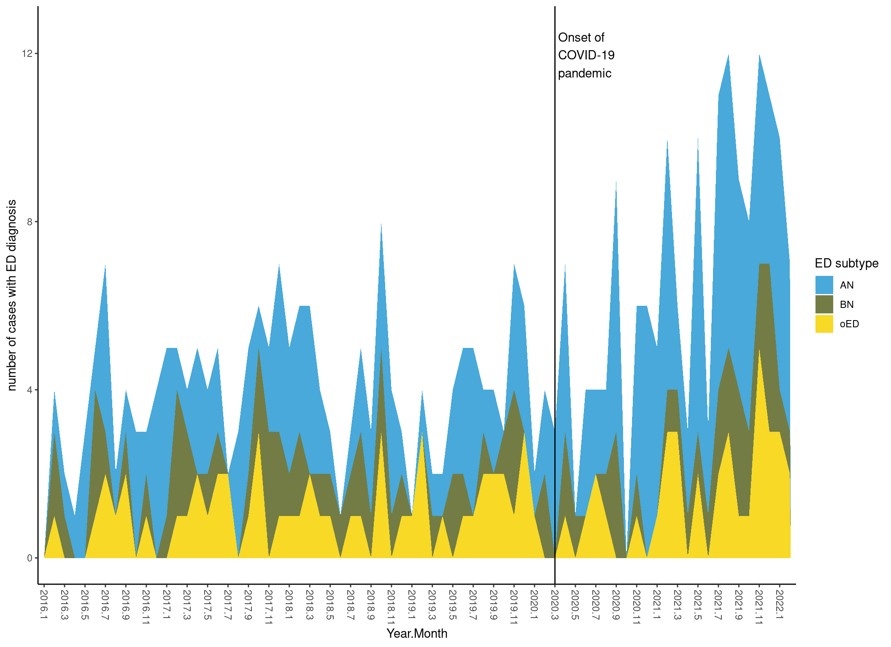
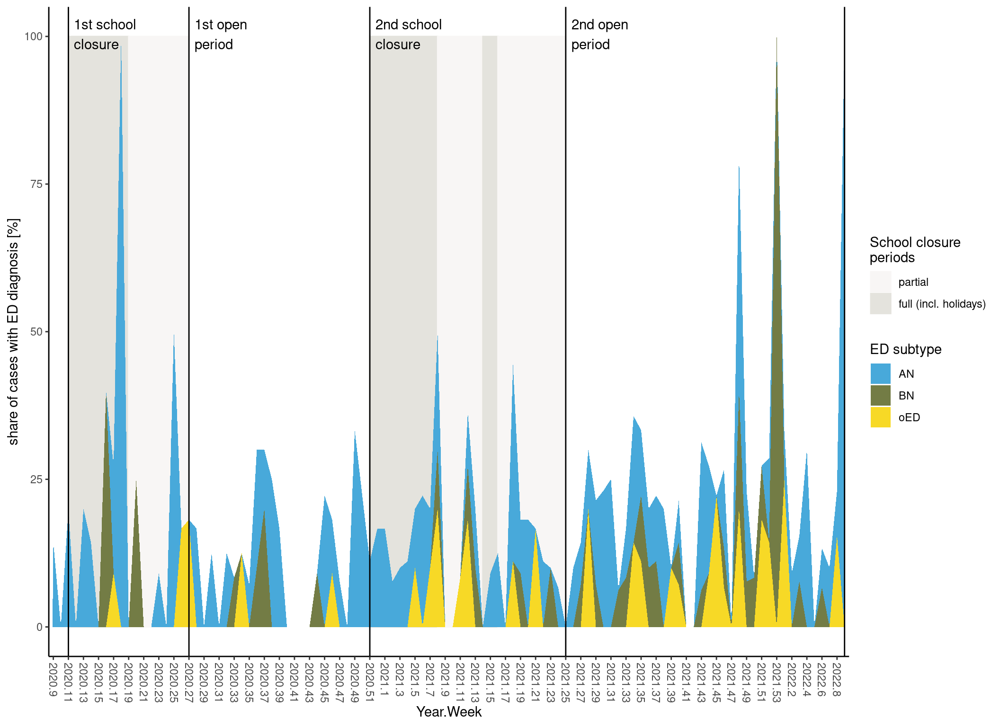
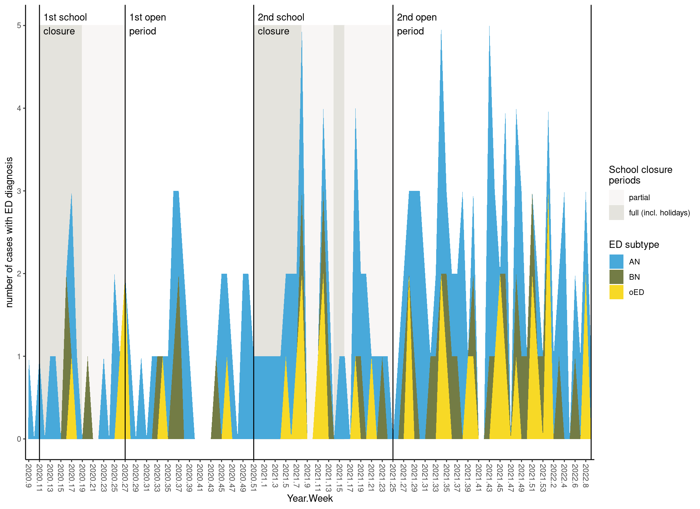
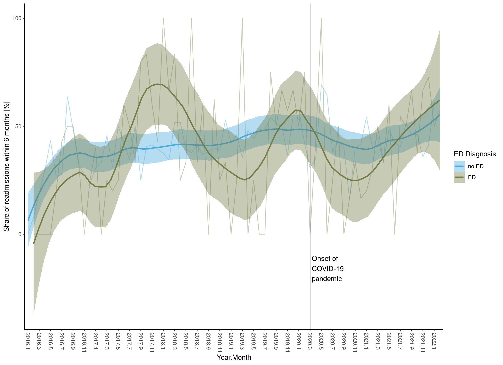

Eating disorder paper plots
SP
2023-08-02
Last updated: 2023-08-02
Checks: 7 0
Knit directory: CoverCHILD/
This reproducible R Markdown analysis was created with workflowr (version 1.7.0). The Checks tab describes the reproducibility checks that were applied when the results were created. The Past versions tab lists the development history.
Great! Since the R Markdown file has been committed to the Git repository, you know the exact version of the code that produced these results.
Great job! The global environment was empty. Objects defined in the global environment can affect the analysis in your R Markdown file in unknown ways. For reproduciblity it’s best to always run the code in an empty environment.
The command set.seed(20221104) was run prior to running
the code in the R Markdown file. Setting a seed ensures that any results
that rely on randomness, e.g. subsampling or permutations, are
reproducible.
Great job! Recording the operating system, R version, and package versions is critical for reproducibility.
Nice! There were no cached chunks for this analysis, so you can be confident that you successfully produced the results during this run.
Great job! Using relative paths to the files within your workflowr project makes it easier to run your code on other machines.
Great! You are using Git for version control. Tracking code development and connecting the code version to the results is critical for reproducibility.
The results in this page were generated with repository version 7995c6f. See the Past versions tab to see a history of the changes made to the R Markdown and HTML files.
Note that you need to be careful to ensure that all relevant files for
the analysis have been committed to Git prior to generating the results
(you can use wflow_publish or
wflow_git_commit). workflowr only checks the R Markdown
file, but you know if there are other scripts or data files that it
depends on. Below is the status of the Git repository when the results
were generated:
Ignored files:
Ignored: .RData
Ignored: .Rhistory
Ignored: .Rproj.user/
Ignored: .gitignore~
Ignored: analysis/.Rhistory
Ignored: analysis/03_eating_disorder_stats.Rmd.bak
Ignored: analysis/_site.yml~
Ignored: analysis/style.css~
Ignored: archive/
Ignored: code/data_etl.R.bak
Ignored: code/eating_dis_cases.R.bak
Ignored: code/functions.R~
Ignored: data/Ergebnis_V2_PLZ_PID_Fall_pseudonym.csv
Ignored: data/ICD_V2.csv
Ignored: data/ICPM_V3.csv
Ignored: data/KIJUPSY_Med_Detail_V2_pseudonym.csv
Ignored: data/Labordaten_V3.csv
Ignored: data/P21_FAB_V1_pseudonym.csv
Ignored: data/P21_Fall_V1_pseudonym.csv
Ignored: data/P21_ICD_V1_pseudonym.csv
Ignored: data/P21_OPS_V1_pseudonym.csv
Ignored: data/Pers_Fall_V2_pseudonym.csv
Ignored: data/Rezepte_Pack_Wirkstoff_V4_pseudonym.csv
Ignored: data/UKF_patient_examples/
Ignored: data/ext/Auswertung C+ 01.01.2021-31.12.2022.xlsx
Ignored: data/ext/CoverChildDatenVerordnungen_Hessen_221110.xlsx
Ignored: data/ext/Diagnose Cluster NUM.docx
Ignored: data/ext/Diagnose_Cluster_NUM_sp.docx
Ignored: data/ext/Fachdisziplinen.pdf
Ignored: data/ext/ICPM_codesCoverChild_AGC.xlsx
Ignored: data/ext/KJP Behandlungstage 2022_20230109.xlsx
Ignored: data/ext/ZPID_lockdown_Arora_Schule.xlsx
Ignored: data/ext/ZPID_lockdown_Arora_Schule_sp.ods
Ignored: data/ext/ZPID_lockdown_measures_release_note-2.0.pdf
Ignored: data/ext/nonF AN Diagnosen und MEds.xlsx
Ignored: data/ext/nonF AN Diagnosen und MEds_sp.ods
Ignored: notes_2022-11-30.odt
Ignored: notes_221128
Ignored: notes_221128~
Ignored: notes_230320.txt
Ignored: notes_230320.txt~
Ignored: notes_etl.txt
Ignored: output/AN_Medikation_letzte_Woche.txt
Ignored: output/AN_somatische_Komorbiditäten.txt
Ignored: output/CoverCHILD_ED_stats_230217.zip
Ignored: output/CoverCHILD_ED_stats_230310.zip
Ignored: output/CoverCHILD_codebook_2023-07-13.csv
Ignored: output/CoverCHILD_codebook_2023-07-13.ods
Ignored: output/CoverCHILD_codebook_2023-07-25.csv
Ignored: output/CoverCHILD_codebook_sum_2023-07-13.csv
Ignored: output/CoverCHILD_codebook_sum_2023-07-25.csv
Ignored: output/CoverCHILD_codebooks_2023-06-15.ods
Ignored: output/CoverCHILD_codebooks_2023-06-15.xlsx
Ignored: output/CoverCHILD_dashboard_data_2023-06-26.rds
Ignored: output/CoverCHILD_dashboard_data_2023-07-25.rds
Ignored: output/CoverCHILD_data+EDvars_2023-03-28.rds
Ignored: output/CoverCHILD_data+EDvars_2023-04-24.rds
Ignored: output/CoverCHILD_data+EDvars_2023-05-16.rds
Ignored: output/CoverCHILD_data+EDvars_2023-06-12.rds
Ignored: output/CoverCHILD_data+EDvars_2023-06-19.rds
Ignored: output/CoverCHILD_data+EDvars_2023-06-21.rds
Ignored: output/CoverCHILD_data+EDvars_2023-06-22.rds
Ignored: output/CoverCHILD_data+EDvars_2023-06-26.rds
Ignored: output/CoverCHILD_data+EDvars_2023-07-12.rds
Ignored: output/CoverCHILD_data+EDvars_2023-07-25.rds
Ignored: output/CoverCHILD_data_230213.rds
Ignored: output/CoverCHILD_data_230215.rds
Ignored: output/CoverCHILD_data_230328.rds
Ignored: output/CoverCHILD_data_ETL_2023-03-28.RData.xz
Ignored: output/CoverCHILD_data_ETL_2023-05-16.RData.xz
Ignored: output/CoverCHILD_data_ETL_2023-06-01.RData.xz
Ignored: output/CoverCHILD_data_ETL_2023-06-12.RData.xz
Ignored: output/CoverCHILD_data_ETL_2023-06-19.RData.xz
Ignored: output/CoverCHILD_data_ETL_2023-06-21.RData.xz
Ignored: output/CoverCHILD_data_ETL_2023-06-22.RData.xz
Ignored: output/CoverCHILD_data_ETL_2023-06-26.RData.xz
Ignored: output/CoverCHILD_data_ETL_2023-07-25.RData
Ignored: output/CoverCHILD_data_ETL_2023-07-25.RData.xz
Ignored: output/CoverCHILD_data_exp_2023-07-25.rds
Ignored: output/CoverCHILD_data_exp_sum_2023-07-25.rds
Ignored: output/data_exp/
Ignored: output/data_utf8/
Ignored: output/ed_plots/
Ignored: output/fhir_etl/
Ignored: output/nicht-f-diagnosen.csv
Untracked files:
Untracked: .idea/
Untracked: code/fhir_etl.R
Untracked: code/fhir_etl.py
Untracked: code/join_close_cases.R
Untracked: code/summarise_per_case.R
Untracked: code/transform_target_dfs.R
Untracked: data/ext/icd_categories.txt
Untracked: t1_wflow.R
Untracked: t2_clar_case_merges.R
Untracked: t3_export_dashboard.R
Untracked: t4_treatment_sum.R
Untracked: variable_names.txt
Untracked: variable_names_clarify.txt
Untracked: variables_unify_per_case.txt
Note that any generated files, e.g. HTML, png, CSS, etc., are not included in this status report because it is ok for generated content to have uncommitted changes.
These are the previous versions of the repository in which changes were
made to the R Markdown
(analysis/04_eating_disorder_plots.Rmd) and HTML
(docs/04_eating_disorder_plots.html) files. If you’ve
configured a remote Git repository (see ?wflow_git_remote),
click on the hyperlinks in the table below to view the files as they
were in that past version.
| File | Version | Author | Date | Message |
|---|---|---|---|---|
| Rmd | 7995c6f | Simeon Platte | 2023-08-02 | ED plots adaptions, add labeller function for factors. |
| Rmd | 89bcadf | Simeon Platte | 2023-07-27 | Refactor ED plot labelling. |
| Rmd | df4002e | Simeon Platte | 2023-07-27 | Format ED markdowns, update links. |
| Rmd | 06a6ddf | Simeon Platte | 2023-07-26 | ED stats clean-up. |
| Rmd | 01f4d62 | Simeon Platte | 2023-07-26 | ED plots clean-up. |
| Rmd | b9322ea | Simeon Platte | 2023-07-25 | Helper functions: add additional _na function versions with na.rm = TRUE default. |
| Rmd | 856da1d | Simeon Platte | 2023-07-25 | ED data processing: extract df subset creation to main ED processing script. |
| Rmd | ffadf0b | Simeon Platte | 2023-07-24 | ED plots: add output subfolder for plots, save ED paper plots. |
| Rmd | ec2848a | Simeon Platte | 2023-07-24 | ED plots: add errorbars to barplots. |
| Rmd | 58e2aa7 | Simeon Platte | 2023-07-24 | ED plots: add plots for absolute number of cases. |
| Rmd | 580a9bf | Simeon Platte | 2023-07-24 | ED plots: add Covid period labels to weekly ED plots. |
| Rmd | 0497449 | Simeon Platte | 2023-07-24 | ED plots: extract prop summary function for monthly/weekly bins, implement new covid_period df format. |
| Rmd | 74f6353 | Simeon Platte | 2023-07-24 | Refactor _week variables to _year_week for clarity. |
| Rmd | c76abc9 | Simeon Platte | 2023-06-21 | Add GU CI-colours for ED plots. |
| Rmd | b595332 | Simeon Platte | 2023-06-20 | Add ED plot for shares of first presentation and re-admissions within ED patients. |
| Rmd | 6b8422b | Simeon Platte | 2023-06-16 | Split ED notebook into: descriptives, plots, statistics/models. |
1 trend of ED diagnosis proportions
1.1 full study period
1.1.1 relative

1.1.2 absolute

1.2 covid pandemic with school closure periods
1.2.1 relative

1.2.2 absolute

1.3 baseline-year comparison
! WIP, not finalised
`geom_smooth()` using method = 'loess' and formula = 'y ~ x'
2 re-admissions within 6 months, monthly
`summarise()` has grouped output by 'adm_year_month'. You can override using
the `.groups` argument.
`geom_smooth()` using method = 'loess' and formula = 'y ~ x'